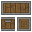
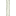
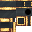

Create: Fantasizing Again
附属模组
方块放置器 ：一个可以在极远的距离放置方块并立即摧毁方块的工具（曾经…
这是什么
方块放置器 ：一个可以在极远的距离放置方块并立即摧毁方块的工具（曾经的 手持式方块放置器 ，但它无需升级就已具有几乎所有的威力。大部分代码来自于 Create: Block n' Zapping ）；
命名空间：
create_fantasizing 1.20.1 版本：本页物品与配方直接取自该版本的 jar。全部物品21
替用型异彩化合物create_fantasizing:alternative_chromatic_compound

安山板条箱create_fantasizing:andesite_crate
方块放置器create_fantasizing:block_placer
未完成的紧缩型水力引擎create_fantasizing:incomplete_compact_hydraulic_engine
没有工作台/机器配方
未完成的紧缩型风力引擎create_fantasizing:incomplete_compact_wind_engine
没有工作台/机器配方
幽灵齿轮create_fantasizing:phantom_cogwheel
没有工作台/机器配方
幽灵大齿轮create_fantasizing:phantom_large_cogwheel
没有工作台/机器配方

幽灵传动杆create_fantasizing:phantom_shaft
没有工作台/机器配方
海晶扇叶create_fantasizing:prismarine_fan_blades
玫瑰石英灯泡create_fantasizing:rose_quartz_bulb

坚固梁create_fantasizing:sturdy_girder
没有工作台/机器配方
坚固梁包住的传动杆create_fantasizing:sturdy_girder_encased_shaft
没有工作台/机器配方
伐树者create_fantasizing:tree_cutter